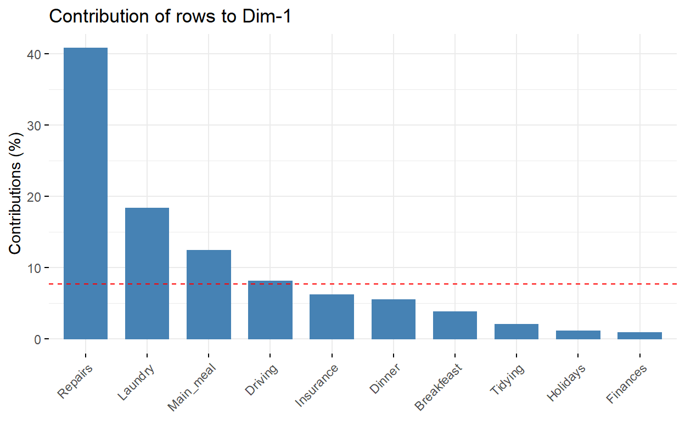

Dans le Lab actuel, nous allons montrer comment calculer et interpréter l’analyse factorielle des correspondances à l’aide de deux packages du programme R :
FactoMiner pour l’analyse
factoextra pour la visualisation des données.
gplots, graphics et corrplot aussi pour la visualisation.
De plus, nous montrerons comment révéler les variables les plus importantes qui expliquent les variations d’un ensemble de données.
Nous continuons en expliquant comment appliquer l’analyse des correspondances à l’aide de lignes et de colonnes supplémentaires, c’est important, si vous voulez faire des prédictions avec l’AFC.
Les dernières sections de ce lab décrivent également comment filtrer les résultats de l’AFC afin de ne conserver que les variables qui contribuent le plus. Enfin, nous verrons comment traiter les valeurs aberrantes.
library(FactoMineR)
library(factoextra)
library(corrplot)
library(gplots)
library(graphics)Les données devraient être sous forme d’un tableau de contingence. Nous utiliserons le jeu de données de démonstration housetasks disponibles dans le package factoextra R.
tapez data(housetasks) pour charger le jeu de données en question
Pour avoir un aperçu sur les données, utiliser les fonction suivantes:
str()pour afficher un listing de toutes les variables et de leurs types
head() pour afficher les 6 premières lignes
tail pour afficher les 6 dernières lignes
rownames() pour afficher les noms des lignes
data(housetasks)
str(housetasks)
head(housetasks)
tail(housetasks)
colnames(housetasks)Le jeu de données est un tableau de contingence contenant 13 tâches domestiques et leur répartition dans le couple.
Les lignes sont les différentes tâches:
les valeurs sont les fréquences des tâches effectuées:
par la femme
par alternance
par le mari
conjointement
Le tableau de contingence peut être visualisé en utilisant la fonction balloonplot() dans le package gplots. Cette fonction trace une matrice graphique où chaque cellule contient un point dont la taille est relative de sa valeur correspondante.
Le graphique pourrait être transposé selon le besoin en transposant le tableau de données par la fonction t(data).
dt <- as.table(as.matrix(housetasks)) # convertir les données en matrice
balloonplot(dt, main ="housetasks", label = FALSE, show.margins = FALSE)dt <- as.table(as.matrix(housetasks)) # convertir les données en matrice
balloonplot(t(dt), main ="housetasks", label = FALSE, show.margins = FALSE)Remarque: Notez que les sommes des lignes et des colonnes sont reportées par défaut dans les marges inférieure et droite, Ces valeurs sont masquées en utilisant l’argument show.margins = FALSE (supprimer l’argument pour voir la différence).
Il est également possible de visualiser une table de contingence comme un tracé en mosaïque. Ceci est fait en utilisant la fonction mosaicplot() du package garphics:
mosaicplot(dt, shade = TRUE, las=2, main = "housetasks")l’argument shade est utilisé pour colorer le graphique
L’argument las = 2 produit des étiquettes verticales
Notez que la surface d’un élément de la mosaïque reflète l’importance relative de sa valeur.
La couleur bleue indique que la valeur observée est supérieure à la valeur théorique dans le cas de l’indépendance
La couleur rouge indique que la valeur observée est inférieure à la valeur théorique dans le cas de l’indépendance
De ce graphique de mosaïque, on peut voir que les “housetasks Laundry”, “Main_meal”, “Dinner” et “breakfeast” (couleur bleue) sont principalement effectuées par la femme dans notre exemple.
Le test du chi-deux permet de déterminer si les lignes et les colonnes d’un tableau de contingence sont associées de façon statistiquement significative.
Hypothèse nulle \((H_0)\): les variables de ligne et de colonne de la table de contingence sont indépendantes.
Hypothèse alternative \((H_1)\): les variables des lignes et des colonnes sont dépendantes.
La statistique du khi-deux peut être facilement calculée à l’aide de la fonction chisq.test(). Nommez le résultat (htasks_chisq par exemple) pour faciliter son exploitation par la suite.
En appliquant la fonction str() sur htasks_chisq, vous saurez accédez aux effectifs observés et théoriques via l’opérateur $.
htasks_chisq <- chisq.test(housetasks)htasks_chisq$observed
htasks_chisq$expectedround(htasks_chisq$expected,2)La fonction round(x, digits = ...) s’utilise pour arrondir un nombre x au nombre de décimales spécifié (0 par défaut).
Les résidus de Pearson \((\frac{(Eff.Observés - Eff.Théoriques)}{\sqrt(Eff.Théoriques)})\) peuvent être aussi extraits facilement de htasks_chisq via l’opérateur $
htasks_chisq <- chisq.test(housetasks)htasks_chisq$residualsLes cellules ayant les résidus normalisés absolus les plus élevés contribuent le plus au score du khi-deux total; ie contribuent le plus à l’écart de l’indépendance.
Les résidus de Pearson peuvent être visualisés en utilisant la fonction corrplot du corrplot package
library(corrplot)
corrplot(htasks_chisq$residuals, is.cor = FALSE)Pour une cellule donnée, la taille du cercle est proportionnelle à la contribution à l’écart de l’indépendance.
Le signe des résidus normalisés est également très important pour interpréter l’association entre les lignes et les colonnes:
Les résidus positifs sont en bleu. Les valeurs positives dans les cellules spécifient une attraction (association positive) entre les modalités de ligne et de colonne correspondantes.
Dans le graphique ci-dessus, il est évident qu’il y a une association entre la colonne Wife et les lignes Laundry et Main_meal.
Il y a une forte association positive entre la colonne Husband et la rangée Repair
Les résidus négatifs sont en rouge. Cela implique un repoussement (association négative) entre les modalités de ligne et de colonne correspondantes.
Par exemple, la colonne Wife est négativement associée à la ligne Repairs .
Il y a aussi un repoussement entre la colonne Husband et, les lignes Laundry et Main_meal.
Les contributions (en \(\%\)) des cellules au score total du khi-deux sont calculées comme suit : \[\frac{Résidus^2}{\chi^2}\]
Calculer ces contributions et tracer les en utilisant la fonction corrplot
contrib <- 100*htasks_chisq$residuals^2/htasks_chisq$statistic
round(contrib, 2)
corrplot(contrib, is.cor = FALSE)On peut constater que:
La colonne Wife est fortement associée à Laundry \((7,74\%)\) et Main_meal \((4,98\%)\), _Dinner La colonne Husband est fortement associée à Repairs \((21,9\%)\) La colonne jointly est fréquemment associée à Holidays \((12,44\%)\)
Ces cellules contribuent à hauteur d’environ \(47,06\%\) au score total de khi-deux et représentent donc la majeure partie de la différence entre les valeurs théoriques et observées.
Cela confirme l’interprétation visuelle antérieure des données. Comme il a été mentionné précédemment, l’interprétation visuelle peut être complexe lorsque le tableau de contingence est très volumineux. Dans ce cas, la contribution d’une cellule au score total khi-deux devient un moyen utile pour établir la nature de la dépendance.
Le calcul peut se faire avec la fonction CA du package FactoMiner, la forme générale est comme suit:
\[CA(X, ncp = ... , graph = ...)\]
Lancer les calcules relatif à l’AFC du jeu de données housetasks sans spécifier np et avec graph=FALSE, Nommez le résultat (htasks.afc par exemple). Puis exolicitez les éléments de htasks.afc en tapant print(res.ca).
htasks.afc <- CA(housetasks, graph = FALSE)htasks.afc <- CA(housetasks, graph = FALSE)Nous utiliserons les fonctions suivantes du packagefactoextra pour faciliter l’interprétation et la visualisation du résultat de l’AFC; à savoir htasks.afc:
get_eigenvalue(htasks.afc): Extraire les valeurs propres/variances retenues par chaque dimension (axe)fviz_eig(htasks.afc): Visualiser les valeurs propresget_ca_row(htasks.afc), get_ca_col(htasks.afc): Extrait les résultats des lignes et des colonnes, respectivement.fviz_ca_row(htasks.afc), fviz_ca_col(htasks.afc): Visualisez les résultats pour les lignes et les colonnes, respectivement.fviz_ca_biplot(htasks.afc): Crée un graphique superposé des lignes et des colonnes.Afficher les valeurs propres des dimensions de l’AFC
eig.val <- get_eigenvalue(htasks.afc)
eig.valLes valeurs propres correspondent à la quantité d’informations conservées par chaque axe. Les dimensions sont ordonnées de façon décroissante et listées en fonction de la quantité de variance retenue.
Les valeurs propres peuvent être utilisées pour déterminer le nombre d’axes à retenir. Il n’y a pas de règle empirique pour choisir le nombre de dimensions à retenir. Cela dépend de la question de recherche et des besoins du chercheur.
Une autre alternative pour déterminer le nombre de dimensions est d’examiner le graphique des valeurs propres/variances ordonnées du plus grand au plus petit. Le nombre de composantes est déterminé au point au-delà duquel les valeurs propres restantes sont toutes relativement petites et de taille comparable.
Tracer ledit graphique en utilisant la fonction fviz_eig() ou fviz_screeplot() du package factoextra.
fviz_screeplot(htasks.afc, addlabels = TRUE, ylim = c(0, 50))Les dimensions 1 et 2 expliquent respectivement environ 48,7% et 39,9% de l’inertie totale. Cela correspond à un total cumulé de 88,6% de l’inertie totale retenue par les 2 dimensions.
Tracer le graphique superposé des profils lignes et des profils colonnes en appliquant la fonction fviz_ca_biplot() sur l’objet htasks.afc
fviz_ca_biplot(htasks.afc, repel = TRUE)Le graphique ci-dessus montre les tendances principales dans les données. Les lignes sont représentées par des points bleus et des colonnes par des triangles rouges. La distance entre les points ligne ou entre les points colonne donne une mesure de leur similitude (ou dissimilarité).
Les points ligne ayant un profil similaire sont proches sur le plan des facteurs. Il en va de même pour les points de colonne.
Ce graphique montre que:
- les tâches internes comme dinner, breakfeast, laundry sont effectuées plus souvent par wife
- Driving et repairs sont effectuées par le husband
- …
Appliquer la fonction get_ca_row() sur l’objet htasks.afc pour extraire les résultats des profils ligne.
Cette fonction retourne une liste contenant les coordonnées, le cos2, la contribution et l’inertie des des profils lign.
row <- get_ca_row(htasks.afc)
rowLes composants de la fonction get_ca_row() peuvent être utilisés pour tracer et analyser les profils ligne comme suit :
- row$coord : coordonnées de chaque point ligne dans chaque dimension (1, 2 et 3). Utilisé pour créer le diagramme de dispersion.
- row$cos2 : qualité de la représentation des profils ligne.
- var$contrib: contribution des lignes (en \(\%\)) à la définition des dimensions.
Jeter un coup d’oeil sur row$coord puis tracer uniquement les points ligne en utilisant la fonction fviz_ca_row() sur l’objet htasks.afc.
fviz_ca_row(htasks.afc)Le graphique ci-dessus montre les relations entre les profils ligne :
htasks.afc <- CA(housetasks, graph = FALSE)
row <- get_ca_row(htasks.afc)Le cos2 mesure le degré d’association entre les profils lignes/colonnes et un axe particulier. Les valeurs du cos2 sont comprises entre 0 et 1, la somme des cos2 pour chaque ligne sur toutes les dimensions de l’AFC est égale à 1.Si un profil ligne est bien représenté par deux dimensions, la somme des cos2 sur les deux dimension est proche de 1.
Afficher Les cos2 des profils ligne en tapant row$cos2, puis visualiser graphiquement row$cos2en utilisant la fonction corrplot.
row$cos2
corrplot(row$cos2, is.corr=FALSE)Notez que tous les profils ligne sont bien représentés par les deux premières dimensions sauf le profil Officiel qui est bien représenté par la troisième dimension.
Il est possible de colorer les points sur le graphique des Coordonnées des points ligne par leurs valeurs cos2 en utilisant l’argument col.row = "cos2". Ceci produit des couleurs dégradé, qui peuvent être personnalisées en utilisant l’argument gradient.cols. Par exemple, gradient.cols = c("white", "blue", "red").
fviz_ca_row(htasks.afc, col.row = "cos2", gradient.cols = c("#00AFBB", "#E7B800", "#FC4E07"), repel = TRUE)Les profils ligne qui contribuent le plus à Dim.1 et Dim.2 sont les plus importantes pour expliquer la variabilité de l’ensemble de données dans le plan défini par les deux dimensions.
Les profils ligne qui ne contribuent pas beaucoup ni à Dim.1 ni à Dim.2 ou qui contribuent le plus à la dernière dimension sont moins importantes.
Afficher les contributions row$contrib puis utiliser la fonction corrplot() pour mettre en évidence les points ligne les plus contributifs pour chaque dimension.
row$contrib
corrplot(row$contrib, is.corr=FALSE)Si vos données contiennent de nombreuses lignes, vous pouvez décider de n’afficher que les premières lignes contributives.Dans ce sens, la fonction fviz_contrib() peut être utilisée pour dessiner un graphique de barres de contributions de lignes. Le code R ci-dessous indique les 10 première profils ligne qui contribuent aux dimensions:
fviz_contrib(htasks.afc, choice = "row", axes = 1, top = 10) 
fviz_contrib(htasks.afc, choice = "row", axes = 2, top = 10)On peut voir que: - Les profils ligne Repairs, Laundry, Main_meal et Driving sont les plus importants dans la définition de la première dimension.
- Les profils lignes Holidays et Repairs contribuent le plus à la dimension 2.
Les profils lignes les plus importants (ou contributifs) peuvent être mis en évidence sur le diagramme des coordonnées comme suit:
fviz_ca_row(htasks.afc, col.row = "contrib", gradient.cols = c("#00AFBB", "#E7B800", "#FC4E07"), repel = TRUE)